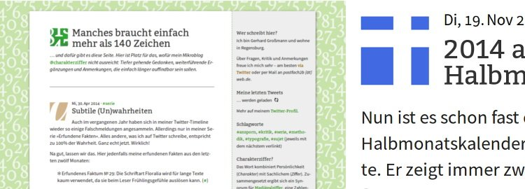
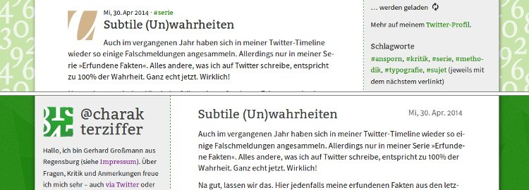

@charak
@charakNeues Design für @cz+
Ich hätte es nicht gedacht, aber mein Blog „@cz+“ ist ganz schön gewachsen. Seit November 2010 habe ich dreiundvierzig Artikel verfasst – zu viele, als dass die ursprüngliche Struktur weiterhin funktioniert hätte. Deswegen habe ich @cz+ nun umfassend technisch überarbeitet und auch grafisch weiterentwickelt. Weg vom früheren Design:

Zu Beginn war dieses Blog eine reine Weiterführung meines Twitterprofils @charakterziffer. Ich habe mehrere kurze Artikel auf einer einzelnen HTML-Seite versammelt, ein farbiges Quadrat vor jeder Überschrift sollte an einen Twitter-Avatar erinnern. Jeder Blogbeitrag war quasi ein längerer Tweet. Zunächst gab es weder Bilder noch verlinkte Materialien; alles, was für die Gestaltung gebraucht wurde, war in die eine Datei eingebettet.
Mit den Inhalten kam die Komplexität
Mit der Zeit haben sich aber einfach zuviele Artikel auf der einen Seite angesammelt und ich habe für die zehn ältesten eine Archivseite angelegt. Und dann noch eine. Und noch eine. Die CSS-Befehle (fürs Design) habe ich in eine externe Datei ausgelagert, habe Bilder hinzugefügt und PDFs verlinkt. Inhaltlich habe ich meine Themenpalette erweitert und mich weniger stark auf Twitter konzentriert.
Was mich zu einem größeren Umbau motiviert hat, war diesen April die Meldung, dass Ubuntu One demnächst schließt. Das war der Cloud-Service, bei dem ich meine Dateien gelagert hatte. Daraufhin bin ich zu GitHub Pages gewechselt, wo ich Dateien besser untereinander verlinken und organisieren kann. Ich werde verlinktes Material nun also nicht mehr nach einiger Zeit offline stellen, wie ich es bislang aus organisatorischen Gründen getan habe.
Jekyll sortiert alle Artikel
Über GitHub Pages bin ich auch auf Jekyll gestoßen. Das ist ein Generator für statische Websites, der einzelne Textdateien in Artikel umwandelt und diese untereinander verlinkt. Damit ist es kinderleicht, jedem Blogeintrag eine eigene, permanente Unterseite zu spendieren, die direkt aufgerufen und kommentiert werden kann.
Mit Jekyll platziere ich auch die drei neusten Einträge in voller Länge auf der Startseite; außerdem gibt es ein Archiv, in dem jeder neue Artikel automatisch auftaucht. Dieses Archiv lässt sich mithilfe von JavaScript übrigens filtern, so dass beispielsweise nur die Einträge zum Thema Typografie angezeigt werden.
Gestalterisch von Twitter emanzipiert

Von der grafischen Gestaltung her habe ich wenige, aber augenfällige Details verändert: Die Randspalte ist nun links statt rechts und der Seitenhintergrund hat ein sattes Grün bekommen statt des blassen Zahlenmusters. Die Farbquadrate vor den Überschriften sind genauso verschwunden wie die drei letzten Tweets; damit möchte ich mein Blog gestalterisch stärker von Twitter trennen.
Gleich geblieben ist dagegen die Schriftmischung aus Bitter und Source Sans Pro. Zwar habe ich die gleiche Kombination mittlerweile auf zwei anderen Websites gesehen – so einmalig ist die Mischung also nicht mehr –, aber sie gefällt mir immer noch gut und passt zur Klarheit und Persönlichkeit meiner Blogartikel.
Direktes Kommentieren erlaubt
Weil mein Blog noch immer eine statische Website ist, sind dynamisch und interaktiv erstellte Inhalte technisch unmöglich. Ich finde aber, dass Kommentare einen Artikel sehr bereichern können. Deswegen greife ich für die Kommentarfunktion auf einen externen Anbieter zurück, der mir Eingaben im HTML-Formular als E-Mail zuschickt. Die so empfangenen Kommentare füge ich dann manuell in die Seite ein (da hilft mir das Jekyll-Plugin Static Comments von Matt Palmer).
Ich bin gespannt auf Rückmeldungen zum neuen Design. Pseudonymes Kommentieren als Gast ist übrigens möglich, ich bin da nicht so. Weiterhin eine vergnügliche Lektüre mit @cz+!